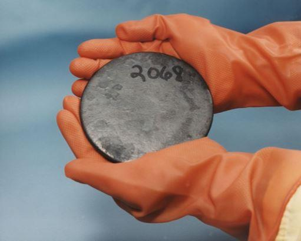
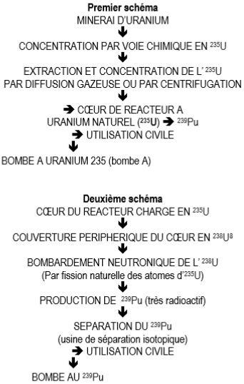
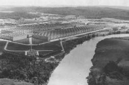
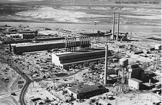
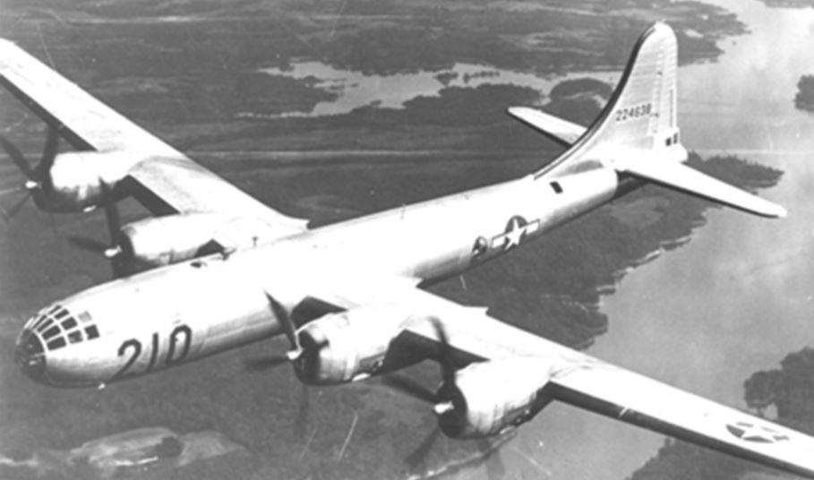
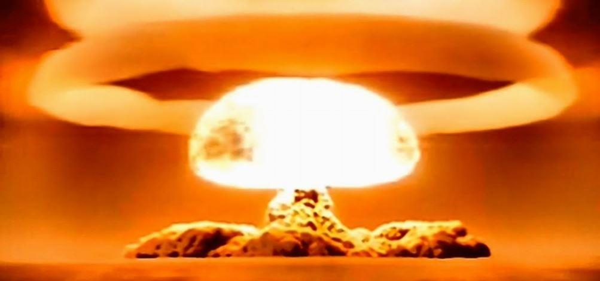

L'Histoire peut généralement être comparée à un mur de briques dont la bonne construction réclame que tous les éléments qui le composent soient en place afin d'assurer la meilleure homogénéité. L'expérience montre que l'Histoire, pour la bien comprendre, se révèle souvent à l'image de ce mur de briques dont les éléments, a priori disparates, se complètent parfois étonnamment et peuvent aussi s'assembler comme un jeu de dominos. Le hasard existe-t-il ? Pas certain du tout !
L’Histoire est toujours écrite par les vainqueurs… C’est une évidence ! De même, elle est plus ou moins directement liée au régime politique dans lequel vit le sujet concerné, c’est une autre évidence. Cependant, au-delà de celle-ci, peut-on imaginer que les nazis ou Staline, sinon les deux, aient possédé la bombe atomique avant les Américains, si oui, sous quelle forme ?
Dans ce genre de chose, on peut toujours raconter tout et n’importe quoi et, suivant l’importance d’un tel sujet, tout autant s’attendre à une désinformation habilement construite. Ensuite, il est tout aussi tentant de faire coller les événements à l’histoire que l’on souhaite exposer et non l’inverse. Ajoutons à cela un zeste de penchant humain pour le fantastique et le mystérieux, nous arrivons alors rapidement à un cocktail explosif… Sans mauvais jeu de mots, évidemment… Néanmoins, cela n’interdit pas de réfléchir un peu et de se poser quelques questions, sachant tout de même que pour atteindre la masse critique permettant la réaction en chaîne de la partie active d’une arme nucléaire, il faut enrichir l’uranium naturel en éléments immédiatement fissiles. Or, de nos jours, par suite de sa décroissance radioactive naturelle au cours du temps, la teneur en uranium fissile du sol, ne dépasse pas 0.7202 % du minerai1, ce qui n’est pas suffisant pour conduire à une réaction en chaîne, encore que…
Ceci précisé, le lecteur voudra bien nous pardonner si nous abordons un peu de physique nucléaire mais sans rien de bien compliqué, au contraire.
En 1972, la COGEMA2 découvre dans une préparation d’hexafluorure d’uranium (UF6) à l’usine d’enrichissement de Pierrelatte (Département de la Drôme), une teneur anormale en uranium 235 (235U), soit 0.71171 % au lieu de 0.7202 %, ce qui correspond à la teneur stable et naturelle du minerai d’uranium constatée aujourd’hui.
Évidemment, cette teneur n’était pas la même dans les temps passés puisque la concentration en éléments fissiles décroît avec le temps3. Rapidement identifié, ce minerai provenait de la mine d’Oklo, située au Gabon, découverte par la France et qu’elle exploite depuis 1956. Toutefois, comment un tel réacteur naturel a-t-il pu fonctionner ainsi durant plusieurs centaines de milliers d’années sans s’emballer ?
L’étude montrera sans guère d’équivoque possible, qu’il y a 1.5 milliards d’années, la teneur en 235U pouvait localement s’établir à 3.6 %4, valeur suffisante pour entretenir une réaction en chaîne.
Toutefois, encore fallait-il qu’elle se modère, c’est-à-dire qu’elle ne s’emballe pas, provoquant ainsi l’explosion immédiate de ce réacteur. Comment cela pu se faire naturellement ? Tout simplement, par le fait que l’eau étant largement présente, elle enrayait l’augmentation de la température du minerai sous l’effet du rayonnement atomique, en abaissait très sensiblement sa masse volumique. Ce phénomène ralentissait alors la réaction nucléaire puis les produits de fission issus de l’235U, comme le Xénon, très « neutrophage »5, achevaient durant quelques heures la poursuite du phénomène tandis que l’eau environnante se refroidissait.
Au fur et à mesure que cette modération s’atténuait, la réaction en chaîne reprenait jusqu’à ce que l’eau et les produits de fission de l’uranium 235 recommencent leur action et ainsi de suite. Il y avait donc ainsi, autorégulation de la réaction de fission des atomes de 235U.
Étonnement, la teneur nécessaire en 235U fissile pour le fonctionnement des réacteurs REP6 actuels est voisine de 3.4 % et l’eau reste le modérateur.
L’ÉNERGIE NUCLÉAIRE DANS LA PROCHE HISTOIRE
Pour autant, de là à fabriquer une bombe, il y a un pas et même un grand mais est-ce bien impossible avec des moyens limités comme ceux disponibles à l’époque de Joseph Staline et d’Adolf Hitler ? Pas certain du tout et, sans entrer dans des détails qui n’ont présentement pas leur place dans ce document, la fabrication d’un engin atomique primaire reste raisonnablement envisageable.
À ce propos, un article fort intéressant paru dans la revue Historia (n° 323 - octobre 1973)7 donne quelques indications qu’il faut, bien entendu, prendre avec la plus extrême prudence sachant, comme précédemment souligné, que l’on peut toujours fantasmer sur le sujet… Néanmoins, rien n’interdit de se livrer à quelque analyse car n’oublions pas que dès le XVIIIe siècle, soit en 1789, le chimiste prussien Martin Heinrich Klaproth connaissait déjà le minerai d'uranium (tout simplement en le chauffant), appelé Pechblende. La planète Uranus ayant été découverte huit années auparavant (1781), il donna obtenu le nom d'urane ou d'uranite au composé qu'il venait d'identifier. In fine, ce fut le chimiste français Eugène-Melchior Péligot (1811-1890) qui l’appela uranium.
Cela montre, par conséquent, que l'affaire était déjà sinon connue, du moins appréhendée et, dès 1896, Edmond Becquerel mit en évidence le rayonnement émis par l'uranium naturel puis, dès 1898, Pierre et Marie Curie découvrirent le polonium et le radium.
On peut donc affirmer que dès la fin du XIXe siècle, les bases de ce qui sera plus tard connu sous le vocable d'énergie atomique étaient déjà jetées. Or, il ne s'agit ici que de ce qui est connu en Occident à travers les physiciens, les chimistes et les mathématiciens devenus ainsi célèbres.
Cela n'implique aucunement qu'en d'autres contrées, d'autres chercheurs n'aient pas été au moins aussi avancés, sinon plus, ou se soient déjà livrés à des expériences plus ou moins importantes, en particulier à travers la construction de réacteurs quelque peu primaires. Ceci d'autant que de nos jours, l'ex-territoire soviétique est crédité d'environ 30 % des réserves mondiales de minerai d'uranium. On peut donc en déduire que la matière première ne manquait pas.
Si l’on envisage que Staline ou Hitler aient pu disposer d’un tel engin, même rudimentaire, franchissons un autre obstacle, hasardeux diront certains, et n’hésitons alors pas à nous poser la question de l’explosion survenue le 30 juin 1908 dans la Toungouska, région de la Sibérie orientale de Russie. Une histoire qui a fait l’objet d’un certain nombre de délires littéraires dont les incontournables ovnis ne sont évidemment pas absents.
Cependant, il ne faudrait tout de même pas s’imaginer que les Anciens étaient stupides au point de ne pas s’aventurer en matière de ce qui sera plus tard appelé la physique nucléaire. Or, si l’explosion au sein de la Toungouska sibérienne résulte d’un bolide météoritique, hypothèse communément admise, constatons que ce dernier, voire cet ovni … fut très bien inspiré de ne pas tomber dans une zone habitée ou au moins proche de l’une d’entre elles. Ceci aurait évidemment permis d’en savoir plus. Remarquons également qu'il avait encore davantage de probabilités de s'abîmer dans les océans qui recouvrent tout de même près des trois quarts de la planète mais non, il a choisi une zone de dense forêt où il n’y avait guère âme humaine qui vive ou quasiment, sinon que des sapins. Il semble qu'il y ait eu là un hasard que l'on pourrait qualifier de « bienveillant ».
Par ailleurs, il est fort étonnant que personne ne se déplaça durant quasiment deux décennies pour enquêter sur ce phénomène qui, de plus, survint également au début de l’été un jour de beau temps. Notons aussi que cette situation géographique permettra ultérieurement d’évaluer l’effet de cette explosion car de l’orientation des sapins couchés au sol et de l’étendue du désastre qui s’ensuivit, il devient relativement aisé de calculer la puissance mise en jeu, sous réserve naturellement, que ladite surface soit connue avec une précision suffisante.
À ce propos, que faisaient les puissances nucléaires pour estimer les effets réels des explosions atomiques, si ce n’est de placer concentriquement à la bombe, divers obstacles comme des bateaux, des constructions, voire des cobayes ? Ce fut donc en quelque sorte, une explosion de bolide extraterrestre survenue dans des conditions idéales…
Cependant, en 1908, comme exposé ci-dessus, que connaissait-on exactement de la radioactivité et de ses effets ? Si tel est réellement le déroulement de cette affaire, pourquoi alors ne pas avoir continué les recherches s'il s'agissait bien d'un tel engin ?
Imaginons tout de même un instant que ceux qui auraient prévalu à cet essai étaient sans doute loin d’en estimer le résultat et que, simplement, ils ont peut-être disparu dans l’explosion… À moins que ce soit tout autre chose comme, par exemple, l’impossibilité technique à l’époque de mettre au point des armes opérationnelles, ou le refus des ingénieurs impliqués de poursuivre dans ce chemin. À moins qu’ils aient été tout simplement éliminés ultérieurement, fréquente solution lorsque l’on ne souhaite pas de témoins.
Cependant, procéder à un essai primaire est une chose, construire une arme opérationnelle en est une autre, et la transporter là où elle doit exploser en constitue une troisième. En effet, pour être opérationnelle, une arme atomique de puissance doit présenter une taille et un poids limités ce qui implique obligatoirement l’enrichissement de l’uranium voisin de 100 % et de disposer de plutonium.
Dans le cas de l’uranium naturel enrichi, ceci nécessite une importante installation industrielle alimentée par une puissante source d’énergie électrique.
Pour le plutonium 239 (239Pu), il convient déjà de disposer d’un réacteur nucléaire capable d’en produire à partir de l’uranium naturel mais aussi d’une installation ad hoc pour l’extraire. Pas simple du tout !
Quant au transport sur le lieu d’opération, en 1908 il ne pouvait être que terrestre. Il est donc à peu près certain qu’à cette époque de telles possibilités n’existaient pas mais, qu’en revanche, la réalisation d’un essai atomique primaire depuis un ballon ou un support terrestre quelconque, par exemple, reste envisageable.
En effet, pour une même puissance, la concentration en 235U voisine de 100 % ne permet que de miniaturiser l’engin mais rien n’interdit de se contenter d’une concentration beaucoup moins importante. Il existe toutefois une limite basse à partir de laquelle la réaction en chaîne devient plus aléatoire. Dans ce cas, pour obtenir le même effet, ce sera le volume du noyau de la bombe qui devra être plus important, d’où augmentation de masse et de volume de l’engin, ce qui entraîne directement une très grande complication logistique.
Pour en revenir à la Toungouska, avant de parler de bombe, peut-être convient-il tout simplement de s'interroger quant à la construction puis à l'emballement d'un réacteur nucléaire primaire, chose raisonnablement envisageable, même à cette époque.
Concernant l’absence d’information avant deux décennies, si tel fut cette hypothétique considération, peut-être que peu furent pressés d’aller expertiser l’épicentre, ou de communiquer des informations, car la première visite connue d’un expert ne surviendra qu’en 1927, menée par le minéralogiste soviétique Leonid Kulik (1883-1942).
Ceci conduit directement à s’interroger au sujet du premier essai atomique connu. Ne serait-il réellement survenu que le 16 juillet 1945 à Alamogordo dans le désert du Nouveau Mexique aux USA, sous le nom de code de TRINITY ?
Réfléchissons un peu… Le projet Manhattan destiné à doter les USA de l’arme atomique, date du 16 décembre 1941 et poursuivait deux voies dont la seconde était tributaire de la première, à savoir : l’enrichissement de l’235U, puis la production de 239Pu (cf. schéma ci-dessus) car ce dernier n’existe plus dans la nature.
Issues de ce programme, les deux bombes nucléaires utilisées sur des populations civiles ont été celle d’Hiroshima (06 août 1945) et celle de Nagasaki (09 août 1945). La charge nucléaire de la première était constituée d’un noyau de 235U, celle de la seconde, nommée « Fat Man », fonctionnait au 239Pu9. Toutes deux d’une puissance estimée par ordre à 15 et 20 kT10, la première nommée « Little Boy », pesant pas moins de 5 tonnes !
Officiellement, les Américains ne procédèrent qu’à un seul essai préliminaire, celui d’Alamogordo, le 16 juillet 1945, soit seulement et respectivement 21 jours et 24 jours avant le bombardement des deux villes japonaises, ce qui est tout de même assez peu et laisse aussi perplexe devant une telle aventure technologique et humaine.
D’autant que le réacteur expérimental implanté à Chicago et placé sous la direction d’Enrico Fermi, capable de ne fournir que de petites quantités de plutonium, ne divergea pour la première fois que le 02 décembre 1942, soit seulement deux années et demie avant le premier essai atomique d’Alamogordo, lequel curieusement utilisera une bombe au plutonium 239 et non à l’uranium 235 naturel.
L’USINE D’ENRICHISSEMENT DE L’URANIUM 235 À OAK RIDGE EN 1946. (DOC. US)
Pour obtenir l’235U nécessaire à la fabrication de la bombe mais également au chargement du réacteur permettant la production de plutonium, les Américains construisirent une usine d’enrichissement par diffusion gazeuse à Oak Ridge, dans le Tennessee. Toutefois, ses différents déboires ne permirent pas de commencer à obtenir le précieux métal avant le printemps de 1944, soit seulement un peu plus d'une année avant l’essai préliminaire qui eut lieu à Alamogordo avec le plutonium 239.
Pour autant, il ne suffisait pas qu’un réacteur produise du 239Pu, encore fallait-il ensuite l’isoler or, ce métal est hautement radioactif. Ceci nécessita, par conséquent, une autre gigantesque usine qui, cette fois, fut construite à Hanford, dans l’état de Washington, laquelle, comme le reste, nécessita de nombreux essais de mise au point, surtout pour des prototypes, avant d’envisager une production industrielle suffisante11.
Cependant, logiquement, elle ne put fournir du 239Pu que sous réserve d’un temps de fonctionnement suffisamment long du ou des réacteurs de production12. Enfin, l’Histoire indique que dès août 1945, les USA disposaient déjà de trois bombes dont deux au 239Pu si l’on incorpore celle d’Alamogordo.
Pas impossible mais, suivant ce qui précède, c’est néanmoins très étonnant ! D’autant que la production de 239Pu dépend directement de l’utilisation de l’uranium 235 et, comme sa production demande un peu de temps de séjour au sein d’un réacteur à uranium naturel, on voit mal comment les USA pouvaient disposer d’une masse plus importante de 239Pu plutôt que d’235U qui peut s’obtenir directement au niveau de l’usine d’enrichissement du minerai d’Oak Ridge.
Par ailleurs, lorsque l’on considère ce que représente les études, la construction des usines et des réacteurs, la fabrication des bombes, les essais de toutes sortes, etc. et, en partant quasiment de zéro, on a tout de même quelque difficulté à imaginer qu’une puissance industrielle, fut-elle les USA, soit parvenue en si peu de temps au résultat recherché.
Enfin, rien ne sert de fabriquer de tels engins si le pays utilisateur ne dispose pas du vecteur capable de les emporter là où retenu. À cette époque, le seul appareil adéquat était le Boeing B-29 Superfortress, un avion très onéreux, difficile à construire et dont la mise au point demanda près de deux années. Le vol du prototype remonte au 21 septembre 1942 mais son utilisation opérationnelle ne le fut qu’au début de 1944. Il y a donc concordance de date entre la fabrication opérationnelle des bombes et la possibilité de les emporter là où elles pouvaient être utilisées.
Sans naturellement fantasmer ni préjuger de quoi que ce soit, sans sous-estimer la capacité des Américains à mener un tel projet, il est néanmoins surprenant que cet ensemble ait été simultanément et en si peu de temps opérationnel sans une préparation initiale remontant déjà à plusieurs années, voire beaucoup plus, au moins sous forme d’études et d’essais avancés.
Alors, que penser de l’explosion survenue en 1908 dans la Toungouska ? Difficile à dire et nous nous garderons bien d’aller plus loin mais ce qui précède incite tout de même à réfléchir et, en particulier, sur la capacité de désinformation des grandes puissances industrielles.
LA GUERRE CIVILE D’ESPAGNE ET LE BOEING B-29 SUPERFORTRESS
Quoi qu’il en soit, pour apporter quelques éléments complémentaires, remontons momentanément jusqu’à la guerre civile d’Espagne…
Si l’on admet un instant que l’empire soviétique disposait, déjà à cette époque, de connaissances avancées en matière nucléaire, sinon d’engins primaires, soit du fait d'un programme plus ou moins structuré, soit issues d’une coopération avec les Allemands, dans la mesure où Staline aurait pu mener à son terme la conquête de l’Espagne et parallèlement celle de la France13, il semble fort probable qu’effectivement une bonne partie des nations serait alors tombée sous l’égide soviétique. Comment, dans ces conditions, reconquérir le terrain perdu d’autant plus que ces armes n’auraient pas manqué de se perfectionner, comme les vecteurs pour les porter ?
Nous retrouverons d’ailleurs là une forte intéressante action de désinformation ou, plus exactement, d'omission puisque le parti communiste français, par nature pacifique et antimilitariste, s’est toujours opposé à la réalisation de la force de frappe entreprise par le général de Gaulle mais, de mémoire, jamais contre celle de l’ex URSS.
Autre élément étrange : pour leur industrie nucléaire, dès les années 1936-37, les USA utilisèrent de très grande quantité d’argent métal pour la construction d’un cyclotron pour lequel ils n’hésitèrent d’ailleurs pas à récupérer tout ou partie de celui entreposé à Fort Knox. Il était en particulier destiné à l’étude de nouveaux corps issus par voie magnétique de séparation des isotopes, ou à celle du graphite sous bombardement de particules atomiques. Or, il est étonnant de constater que si 560 tonnes d’or de la banque d’Espagne sont parties vers l’URSS dès 1936, 1225 tonnes d’argent prirent la direction des USA. Hasard ? Il est donc indéniable qu’une course à la bombe opérationnelle était déjà engagée. Il est vraisemblable que les USA, en retard sur ce point, employèrent des moyens à la dimension de leur capacité à réagir mais de là à penser que tout partit du projet Manhattan et qu’en deux années et demie ils aient pu disposer de trois bombes, dont deux au plutonium, que le premier essai fut précisément un engin au plutonium, il y a un pas qu’il paraît quelque peu hasardeux de franchir.14
D’autant plus que, comme souligné, l’obtention du plutonium demande du temps, surtout dans un réacteur de puissance limitée comme c’était le cas à cette époque.15 Par conséquent, si à l’été 1945 l’Amérique possédait déjà deux bombes au 239Pu, on peut logiquement supposer qu’elle disposait, peut-être depuis un moment déjà, d’un nombre plus important d’engins à l’uranium 235 naturel, moins compliqués à fabriquer puisque ne nécessitant pas une usine de séparation isotopique comme Hanford, et pour lesquels il ne manquait plus que le vecteur de transport, à savoir : le Boeing B-29 Superfortress.
Que les USA aient disposé plus tôt qu’ils ne l’ont dit de l’arme nucléaire ne paraît pas immédiatement modifier l’évolution de la seconde guerre mondiale, encore que...
En revanche, à nouveau, le conflit espagnol prend une autre dimension qui reposerait alors bien sur le risque lié à la géostratégie planétaire, risque encouru par la chute éventuelle des ex-colonies sous régime communiste de l’Espagne, du Portugal et surtout de la France, toujours en sa possession à cette époque. Or, tout conflit sous-tend des intérêts financiers et sur ce point, il ne faudrait pas oublier que tant l'Espagne que ses ex-colonies renfermaient, comme pour celles de la France, de très grandes richesses sur lesquelles les grands financiers, via la bourse de Wall Street et d'autres, spéculaient. Leur perte ou plutôt leur transfert sous un régime qui leur échappait aurait conduit à de graves conséquences pour l'économie du moment mais également future. À partir de ce moment-là, la situation des USA, et celle de leurs alliés, serait devenue indéniablement critique.
Constatons alors que, selon toute probabilité, l’action atomique militaire des USA n’a pas commencé avec le projet Manhattan en décembre 1941 mais bien avant avec les connaissances déjà acquises, puis dès 1936 avec la réalisation du premier cyclotron.
Le projet Manhattan ne serait donc que le début connu ou officiel de la phase industrielle et opérationnelle conduisant à la fabrication en série de bombes atomiques et de leur indispensable vecteur, le Boeing B-29 Superfortress dont l’étude commença également en 1941. En effet, encore ne suffit-il pas de disposer de telles bombes mais est-il tout aussi difficile de les emporter là où elles doivent exploser. Or, à cette époque, compte tenu de leur masse, seul un avion de cette classe pouvait le faire mais là encore, à condition de pouvoir disposer de moteurs assez puissants. C'est précisément ici que la mise au point de cet avion prit du retard car assurer la fiabilité nécessaire à des propulseurs à pistons, fonctionnant à l'essence en injection directe, d'une puissance de 2.250 CV chacun, n'est pas une mince affaire16.
En conclusion, pour engager un tel programme et le réaliser en si peu de temps, il ne semble pas anormal de supposer que les connaissances antérieurement acquises étaient suffisantes pour en assurer le succès et, par voie de conséquence, l'évolution mais aussi à terme le contrôle des hostilités.
BOMBARDIER STRATÉGIQUE BOEING B-29 SUPERFORTRESS. ARCHIVES USA
Dès son développement, et sans doute même un peu avant, la guerre civile d'Espagne, savamment analysée par les stratèges financiers et politiques, ne pouvait que conduire à une rapide évolution de modernes et puissants moyens militaires dont on peut tout de même s'étonner de la transformation opérationnelle en si peu de temps.
Cela signifie qu'en 1941, pour décider le financement puis entreprendre l'étude et, in fine, la construction d'un aéronef de la classe du B-29 Superfortress, il fallait donc que le besoin en soit exprimé, qu'il soit justifié et le succès quasiment assuré. Autrement dit, qu'il réponde à une nécessité non seulement vitale mais également à un succès militaire, tant pour lui-même que pour les missions qui lui seraient dévolues, ce qui confirme que le succès du programme atomique américain était déjà acquis.
Hormis les bombardements lointains à partir d'engins classiques, cet appareil était aussi le seul à pouvoir assurer la logistique de la bombe atomique, à cette époque, arme très lourde.
LA COURSE À LA BOMBE ATOMIQUE À FISSION
Parallèlement à ce qui précède, il n’est guère douteux qu’une course à la bombe eut lieu entre, d’une part l’Allemagne et l’URSS, d’autre part avec les USA mais quelles étaient réellement les armes qu’ont pu mettre au point ces deux premières puissances ?
Comme précédemment exposé, il existe trois manières de réaliser un tel engin, à savoir :
- A partir d’une matière fissile concentrée, ce qui conduit à la miniaturisation de la bombe et donc à sa facilité opérationnelle ;
- A partir d’une matière fissile moins ou peu concentrée, ce qui conduit à un engin lourd et volumineux, difficilement opérationnel, voire pas du tout ;
- A partir d’une bombe à explosif chimique conventionnel au sein duquel sont disséminés des produits radioactifs. Il ne s’agit alors plus d’une bombe atomique mais de ce que l’on appelle une « bombe sale » dont l’unique objet est de polluer pour un temps très long la zone d’impact et de provoquer ainsi la mort plus ou moins rapide de la population locale. Il s’agit en réalité, de la « bombe du pauvre » et d’un va-tout de dernière chance.
En 1945, il est peu probable que l’Allemagne ait pu disposer d’engins atomiques réels, sauf à ce qu’une collaboration secrète avec l’URSS ait été activée, ce qui semble peu réaliste. À cette époque, le Reich était déjà vaincu et la production électrique, depuis au moins 1943, n’était plus suffisante par suite des destructions de la RAF et de l’US Air Force pour alimenter une usine d’enrichissement et, a fortiori, de séparation isotopique.
En revanche, comme l’on pourrait aussi le déduire à la lecture du livre de Rainer Karlsch « La bombe de Hitler »17, il paraît fort probable que ce dernier ait expérimenté une ou plusieurs « bombes sales », ce qui précipita l’effort atomique des USA.
Toutefois, l’Allemagne ne disposait pas du vecteur opérationnel nécessaire pour porter l’engin au-delà de l’Europe si bien que toute utilisation d’une telle arme, compte tenu de la direction des vents dominants, se serait en tout ou partie retournée contre elle par suite des retombées radioactives.
Un tel engin n’avait donc comme intérêt que d’être mis en œuvre à très grande distance, autrement dit contre les USA, éventuellement contre l’Afrique du Nord alors sous contrôle des alliés, voire contre l’Australie. C’est largement ce qui explique la multiplication des projets allemands, souvent irréalistes, tels que fusées intercontinentales, avions à très longs rayons d’action si ce n’est modules balistiques satellisés dont on retrouve d’ailleurs l’essence au niveau des navettes spatiales US ou de l’ex-URSS.
Quant à cette dernière, le mystère reste entier mais deux constats antagonistes apparaissent :
D’une part, dès 1945 le potentiel nucléaire américain connu était nettement supérieur à ce que l’on sait de celui de l’URSS dont la première bombe à fission n’explosa officiellement que le 29 août 1949 dans le désert du Kazakhstan, soit quatre années après.
D’autre part, l’attitude américaine consista à aider militairement l’URSS de Staline durant une certaine partie de la guerre puis, alors qu’elle en avait les moyens, à ne pas poursuivre le conflit avec cet empire au risque déjà connu d’entamer ultérieurement une guerre dite « froide ».
Naturellement, on peut comprendre que les USA ne souhaitaient pas étendre indéfiniment un conflit armé dont l’expérience montre qu’il est toujours délicat et très risqué de diluer la force, erreurs fatales de Napoléon 1er et d’Hitler. Compte tenu des succès et de la puissance des armées de Staline18, il aurait donc été très dangereux pour l’Amérique, même possédant l’arme nucléaire, d’engager un conflit avec l’URSS d’autant que le partage du monde entre les deux puissances avait déjà été décidé en février 1945 à Yalta.
Pour autant, cela n’explique pas tout, y compris au regard de ce qui précède puis de la suite des événements. Il semble clair que depuis les années 30, suivant certainement d’autres informations connues mais non divulguées, l’arme atomique représenta l’un des enjeux primordiaux de la seconde guerre mondiale, sinon le seul, ceci afin de maintenir l’hégémonie et les intérêts du monde occidental avant que de nouveaux moyens adaptés pour cela n’apparaissent. In fine, l’attitude des USA durant le premier conflit mondial devient ainsi plus claire, car il est évident que sur le terrain d’Europe ce ne sont pas eux qui ont mis fin au conflit mais les Soviétiques.
En revanche, ces mêmes USA, disposant alors de l’arme nucléaire opérationnelle, ont tout simplement contrôlé la fin de ce conflit qui leur serait de toute manière devenu favorable et dont ils purent faire état dans leur propagande.
–––
Les deux explosions d’Hiroshima et de Nagasaki n’avaient donc aucune utilité militaire, le Japon étant de fait déjà vaincu, mais à l’évidence elles marquaient la limite à ne pas franchir en Europe de l’Ouest pour l’ex-URSS, Europe de l’Ouest que ces mêmes USA avaient investie à partir des débarquements de Normandie, d’Italie et de Provence et qu’ils entendaient bien conserver, ce qui est toujours le cas à travers l’OTAN mais pas que.
Ensuite, malgré l’extrême cruauté dont firent preuve les Japonais durant ce conflit, grâce à cette arme nouvelle ils pouvaient ainsi devenir victimes aux yeux du monde et justifier leur capitulation sans conditions. Quant aux Américains, ils glorifiaient ainsi leur puissance faisant au passage oublier que ce furent les Soviétiques qui endurèrent le gros de la guerre lesquels, pour finir, menaçaient directement et très rapidement l’existence même du Japon post-conflit, bien avant que les USA aient pu y mettre le pied.
Quoi qu’il en soit, dans le cas où la décision aurait plutôt conduit à faire exploser de tels engins sur l’Allemagne, le risque aurait été grand de voir les retombées radioactives intéresser l’ex-Union Soviétique, ce qui n’était pas le cas pour le Japon déjà en bonne partie rasé, retombées radioactives qui se diluèrent alors dans l’océan comme les dessous de cette histoire dans laquelle la vie humaine n’a qu’une importance tout à fait marginale…

J-M. T.
Notes
1. L’écorce terrestre contient en tous lieux de l’uranium mais la teneur pour les mines exploitables se situe entre 1 et 5 kg/tonne. Ce minerai est essentiellement constitué de trois isotopes, soit (valeurs arrondies) : 98% d’238U, 0.72% d’235U (le seul fissile) et 0.005% d’234U.
2. Société française, filiale du Commissariat à l’Énergie Atomique.
3. Ce que l’on appelle la période radioactive, qui se situe à 704 x 106 années pour l’235U. Cela signifie que durant cette période, la radioactivité, et donc la teneur en élément fissile, décroît de moitié et ainsi de suite.
4. L’uranium de masse atomique 235 est le seul élément fissile à l’état naturel. C’est lui qui est utilisé dans les réacteurs appelés « à neutrons lents » (réacteurs des centrales électronucléaires, par exemple). Toutefois, à partir du bombardement neutronique de l’238U (inerte) par l’235U, on obtient le plutonium 239 (239Pu), fissile. Autrement dit, dans un réacteur à 235U, la disposition d’éléments constitués d’238U non naturellement fissile, se traduit par la production de 239Pu, utilisable dans les bombes atomiques ou dans des réacteurs, dits : à neutrons rapides, comme Superphénix (SPX), en France. En théorie, l’énergie produite par le 239Pu est un peu supérieure à celle produite par l’235U de départ, d’où le radical Phénix (dans la mythologie grecque, le Phénix est un oiseau doué d'une longévité extraordinaire, capable de renaître de ses propres cendres après s'être consumé).
5. Qui absorbe les neutrons par capture.
6. Réacteurs à Eau Pressurisée, appellation française du terme américain PWR (Pressurised Water Reactor).
7. Revue Historia n° 323, octobre 1973, pp.138 à 145.
8. Les réacteurs à uranium naturel, modérés au graphite (piles atomiques) sont par nature plutonigènes. Pour la France, c'est ce qui explique, en particulier, la construction des premières centrales électriques de Chinon, de St. Laurent des Eaux A et B et dans une certaine mesure, de Bugey 1. En laissant seulement quelques mois la couverture périphérique d'U 238 au sein du réacteur, il y a production de 239Pu. Celui-ci est alors retraité dans une usine de séparation isotopique (Marcoule, La Hague…) avant que par sa désintégration radioactive, il ne participe trop à la production de chaleur, ce qui n'est pas l'objectif militaire.
9. Plutonium 239.
10. Équivalent à 20.000 tonnes de TNT (Trinitrotoluène).
11. Deux voies sont généralement utilisées pour la production d’uranium enrichi. La première consiste à faire passer une solution d’hexafluorure d’uranium (UF6) à travers des membranes microporeuses dans lesquelles l’235U reste piégé. C’est la diffusion gazeuse Il s’agit d’une technique ancienne, éprouvée mais consommant beaucoup d’énergie électrique et peu productive. Plus récemment, une autre technique industrielle mise au point consiste à faire passer cette même solution dans des centrifugeuses à grande vitesse où l’uranium, métal lourd, se dépose. C’est la technique par centrifugation qui réclame moins d’énergie et qui s’avère davantage productive mais plus délicate à exploiter. D’autres techniques existent également, comme la séparation par laser ou magnétique.
12. Dès 1940, d’autres voies furent également explorées pour la fabrication d’éléments fissiles ou ultérieurement, pour étudier le comportement du modérateur en carbone des réacteurs plutonigènes. Ceci nécessita la construction de plusieurs cyclotrons équipés d’énormes électroaimants dont les fils des bobines étaient en argent, excellent conducteur électrique, ce qui permettait de faire passer une importante intensité de courant électrique sans échauffement excessif.
Pas moins de 9 réacteurs plutonigènes fonctionnèrent à Hanford jusque dans les années 70.
13. Engagés en mai 1936, les événements sociaux de France le furent presque simultanément avec le début de la guerre civile espagnole.
14. À cette époque, la réaction en chaîne des réacteurs à uranium naturel (235U) chargés de la production de plutonium à usage militaire, était contrôlée par des empilages de graphite, d’où le nom de pile atomique, lequel graphite possède la propriété d’absorber les neutrons. Il est appelé : modérateur, comme l’eau qui circule autour du cœur des réacteurs REP modernes, équipant les centrales électronucléaires.
15. Très puissant électroaimant, propulsant des particules sur une cible constituée par le matériau à étudier. Sous l’impact, les noyaux des atomes de la cible, éclatent, conduisant à la création de nouveaux corps, souvent radioactifs, à vie plus ou moins longue. Par rapport au simple canon à particules qui consiste à les projeter en ligne directe sur la cible, le cyclotron se présente sous forme d’un anneau au sein duquel, les particules initialement mises en vitesse par l’électroaimant principal, sont régulièrement accélérées par des bobines secondaires. L’énergie étant proportionnelle au carré de la vitesse (E = 0.5mV²), elle peut ainsi atteindre de colossaux niveaux.
On comprend ainsi mieux l’importante consommation d’argent métal des USA dans ces années-là pour fabriquer les bobines nécessaires au fonctionnement des électroaimants du cyclotron car l’argent présente moins de résistance électrique que le cuivre.
16. Moteur Wright R-3350 équipé d'un turbocompresseur à double étage. 18 cylindres en double étoile (9 par couronne) avec injection directe de l'essence.
Curieusement, les témoins rapportent sensiblement les mêmes constats que lors d’un essai atomique auquel l’URSS aurait procédé dans les années 43 et à laquelle Staline ne voulut pas assister.
18. L’URSS avait engagé un programme de recherche nucléaire depuis les années 30 et était déjà très en avance. Certaines informations laissent penser que vers 1943 un engin primaire avait été essayé, essai auquel Staline n’avait pas voulu assister. Les ingénieurs et les témoins semblent avoir disparu.

Partager cette page